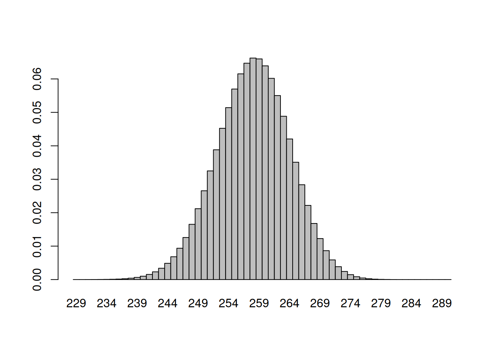
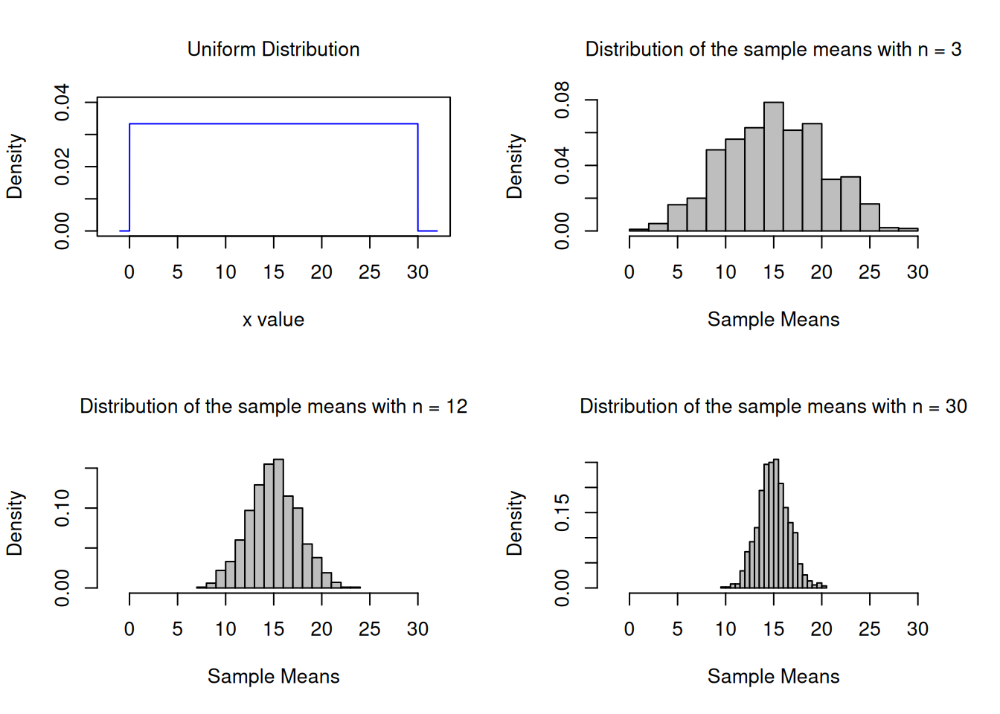
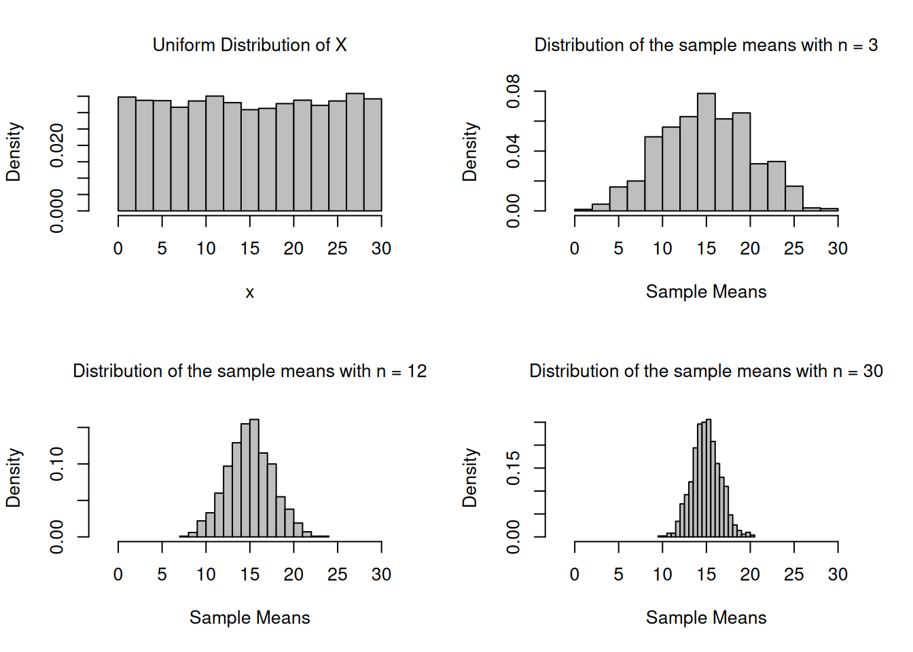

Children’s IQ scores are normally distributed with a mean of 100 and a standard deviation of 15. What proportion of children are expected to have an IQ between 80 and 120?
According to a study 86% of the countries households own a cellular phone (one or more). In a random sample of 20 households, what is the probability that exactly 15 own a cell phone?
dbinom(15,20,0.86)
[1] 0.08680819
Example 5
In a random sample of 20 households, what is the probability that the number of households owning a cell phone is between 15 and 17?
1 - Construct a binomial probability histogram with \(n=10\) and \(p=0,2\). 2 - Construct a binomial probability histogram with \(n=10\) and \(p=0,5\). 3 - Construct a binomial probability histogram with \(n=10\) and \(p=0,8\). Comment on the shape of the distribution.
First of all, we define a function for plotting a Binomial probability.
hist.binom <-function(n, p, ...){# plots a Binomial probability distribution k <-0:n p <-dbinom(k, n, p)names(p) <-as.character(0:n)barplot(p,space=0, ...)}
To use the hist.binom() function, you must specify the values of n and p.
hist.binom <-function(n, p, ...){# plots a Binomial probability distribution k <-0:n p <-dbinom(k, n, p)names(p) <-as.character(0:n)barplot(p,space=0, ...)}
For example, to get the histogram of a binomial \((6,1/3)\) distribution, use hist.binom(6,1/3).
Try experimenting with the col (color) argument; use help(colors) or colors() to see what colors R knows by name.
hist.binom <-function(n, p, ...){# plots a Binomial probability distribution k <-0:n p <-dbinom(k, n, p)names(p) <-as.character(0:n)barplot(p,space=0, ...)}
An alternative way to plot a Binomial probability distribution
n<-300k <-0:nprobs <-dbinom(k, n, 0.2)names(probs) <-as.character(0:n)probs
For a fixed \(p\), as the number of trials in a binominal experiment increases, the probability distribution of the random variable X becomes bell shaped.
hist.binom <-function(n, p, ...){# plots a Binomial probability distribution k <-0:n p <-dbinom(k, n, p)names(p) <-as.character(0:n)barplot(p,space=0, ...)}
Example 8
According to a study 86% of the countries households own a cellular phone (one or more). In a simple random sample of 300 households, 275 owned at least one cell phone. Is this result unusual?
n <-300p <-0.86dbinom(275,300,0.86)
[1] 0.0008531712
The answer cannot be found by simply calculating the probability for a particular value to occur! Examine the probabilities of all possible outcomes:
==> only 9 values have probabilities slightly higher than 5%
With an increasing number of possible outcomes, the probability of any particular outcome to occur will decrease!
Try this:
sampleSpace <-c(0,seq(1:3000))sampleSpaceProbs <-dbinom(sampleSpace,3000,0.86)i <-1while(i <3001){ if (sampleSpaceProbs[i] >=0.05) {print(paste(as.character(sampleSpace[i]), " ", as.character(sampleSpaceProbs[i]) ) ); } i <- i+1;}
==> none of the values has a probability of at least 5% to occur
The approach: check for the range of values around the expected value that add up to 95% of all possible occurrences. Values outside that range are considered unusual.
The Empirical Rule states that in a bell-shaped distribution about 95% of all observations lie between ?? - 2?? and ?? + 2??. Any observation that lies outside this intervall occurs less than 5% of the time and must be considered unusual.
Can we assume that the given binimial distribution is bell-shaped \(n*p*(1-p)>9\)? ==> TRUE ==> It’s bell-shaped distribution. Thus we can apply the Empirical Rule!
–> Expected Value or Mean � of the given binomial dist.
expV_Cellphones <- n*p
–> Standard Deviation ?? of the given binomial dist.
sd_Cellphones <-sqrt(n*p*(1-p))
Is 275 smaller than ?? - 2??
expV_Cellphones -2*sd_Cellphones
[1] 245.98
275 < expV_Cellphones - 2*sd_Cellphones
Is 275 greater than ?? - 2??
expV_Cellphones +2*sd_Cellphones
[1] 270.02
275 > expV_Cellphones + 2*sd_Cellphones
==> unusual result
Visualization of the result
The hist() function does not work here, since we do not have counts but probabilities/relative frequencies we can create a barplot instead, that looks like a histogram
barplot(dbinom(229:290,n,p), space =0, width =1, names.arg =as.character(229:290))

We create our own hist function for binomial probability distributions
hist.binom <-function(n, p, ...){# plots a Binomial probability distribution k <-0:n p <-dbinom(k, n, p)names(p) <-as.character(0:n)barplot(p,space=0, ...)}
Example 8b
According to the American Red Cross, 7% of people in the United States have blood type 0-negative. What is the probability that in a single random sample of 500 people in the US fewer than 30 have blood type 0-negative?
n <-500p <-0.07pbinom(29,n,p)
[1] 0.1677677
The answer can also be approximated using the normal dist. if the given binomial dist. approx. the shape of a normal dist.
Can we assume that the given binimial distribution is normal \(n*p*(1-p)>9\)? ==> TRUE ==> approx. normal distribution
Determine the necessary parameters for the normal dist. –> Expected Value or Mean � of the given binomial dist.
expV_bloodType <- n*p
–> Standard Deviation ?? of the given binomial dist.
sd_bloodType <-sqrt(n*p*(1-p))
Probability that fewer than 30 have that blood type in a sample of 500
pnorm(29.5, expV_bloodType, sd_bloodType)
[1] 0.1675173
Visualisation of the result
The hist() function does not work here, since we do not have counts but probabilities/relative frequencies we can create a barplot instead, that looks like a histogram
bp <-barplot(dbinom(15:55,n,p), space =0, width =1, #names.arg = as.character(15:55),col="yellow", main="Binom. Dist. (n=500, p=0.07) with a superimposed normal curve", axes=FALSE, xlab="No of people with blood typ 0-negative", ylab="Prob. Density")axis(1, labels =c(15:55), at = bp, tcl =-0.25) axis(2) bp
# color the interesting area differentlybarplot( dbinom(15:29, n, p),space=0, col="skyblue",add=TRUE)# add a vertical line for x = 29abline(v =14.5, col ="red", lty =1)text(x=12.5, y=0.06,pos=4, paste("29"),cex=0.75, col ="red")xy <-xy.coords(x=0.5:39.5, y=dnorm(15:54,expV_bloodType,sd_bloodType))lines(xy, lwd=2, col=2)
Create a uniform population and simulate 1000 samples of size 3, 12 and 30 and calculate the sampling means.
# Create a uniform population with 10000 individuals dataUnif <-runif(10000,min=0, max=30)n_Hist <-hist(dataUnif, breaks=16, xlab="x",main="Uniform Distribution of x", freq=F, col="grey",xlim =range(-2,32))
Create frequency histograms for the sampling means.
Version 1: A diagram with a plot of x in the population is added
par(mfrow=c(2,2), font.main=1, cex.main=1) # Splits graphics output into a table of 2 rows and 2 columnsplot(xUnif, hxUnif, type="l", lty=1, xlab="x value",xlim =range(-2,32),ylab="Density",ylim =range(0,0.04), main="Uniform Distribution",col="blue")n1_Hist <-hist(vec_n1, breaks=16, xlab="Sample Means",main="Distribution of the sample means with n = 3", freq=F, col="grey",xlim =range(-2,32))n2_Hist <-hist(vec_n2, breaks=16, xlab="Sample Means",main="Distribution of the sample means with n = 12", freq=F, col="grey",xlim =range(-2,32))n3_Hist <-hist(vec_n3, breaks=16, xlab="Sample Means",main="Distribution of the sample means with n = 30", freq=F, col="grey",xlim =range(-2,32))

par(mfrow=c(1,1)) # This line resets the graphics device to a 1x1 table
Version 2: A histogram of the population data of x is added
par(mfrow=c(2,2), font.main=1, cex.main=1) # Splits graphics output into a table of 2 rows and 2 columnsn_Hist <-hist(dataUnif, breaks=16, xlab="x",main="Uniform Distribution of X", freq=F, col="grey",xlim =range(-2,32))n1_Hist <-hist(vec_n1, breaks=16, xlab="Sample Means",main="Distribution of the sample means with n = 3", freq=F, col="grey",xlim =range(-2,32))n2_Hist <-hist(vec_n2, breaks=16, xlab="Sample Means",main="Distribution of the sample means with n = 12", freq=F, col="grey",xlim =range(-2,32))n3_Hist <-hist(vec_n3, breaks=16, xlab="Sample Means",main="Distribution of the sample means with n = 30", freq=F, col="grey",xlim =range(-2,32))

par(mfrow=c(1,1)) # This line resets the graphics device to a 1x1 table
Example 11
Create histograms of 1000 sampling means from samples with \(n = 9\) and \(n = 25\) that are taken from a population that is not normal. Make sure that each is appropriately labelled. Determine the mean and the sd of the frequency dist.
#Generate some non-normally distributed data (f distribution, Fisher-Dist.).population <-rf(10000,10,10)hist(population)
# Simulate 1000 samples of size 4, 10 and 35 and calculate the sampling means of scores that are not normally distr. N <-1000n1 <-4n2 <-10n3 <-35vec_n1 <-NULLvec_n2 <-NULLvec_n3 <-NULLwhile (N>0){ N<-N-1; samp_n1<-rf(n1,3,27); samp_n2<-rf(n2,3,27); samp_n3<-rf(n3,3,27); vec_n1<-c(vec_n1,mean(samp_n1)); vec_n2<-c(vec_n2,mean(samp_n2)); vec_n3<-c(vec_n3,mean(samp_n3));}par(mfrow=c(2,2), font.main=1, cex.main=1) # Splits graphics output into a table of 2 rows and 2 columnspop_Hist <-hist(population, breaks=16, xlab="Scores from a Fisher Distribution (Population)",xlim =range(0 ,6),main="Fisher Distribution", freq = F )n1_Hist <-hist(vec_n1, breaks=16, ylab="", xlab="Sample Means",xlim =range(0,5),main="Distribution of the sample means with n = 4", freq=F)n2_Hist <-hist(vec_n2, breaks=16, ylab="", xlab="Sample Means",xlim =range(0,4),main="Distribution of the sample means with n = 10", freq=F)n3_Hist <-hist(vec_n3, breaks=16, ylab="", xlab="Sample Means",xlim =range(0, 3),ylim=range(0,2.7), main="Distribution of the sample means with n = 35", freq=F)
par(mfrow=c(1,1)) # This line resets the graphics device to a 1x1 table
Example 12
Simulate 1000 samples of size 9 and 25 and calculate the sampling means of normally distributed IQ Scores (\(�=100\), \(Sigma=15\))
N <-1000n1 <-9n2 <-25vec_n1 <-NULLvec_n2 <-NULLwhile (N>0){ N<-N-1; samp_n1<-rnorm(n1, mean=100, sd=15); samp_n2<-rnorm(n2, mean=100, sd=15); vec_n1<-c(vec_n1,mean(samp_n1)); vec_n2<-c(vec_n2,mean(samp_n2));}par(mfrow=c(1,2)) # Splits graphics output into a table of 3 rows and 2 columnshist(vec_n1, breaks=16, xlab="Sample Means, n=9",xlim =range(80,120),main="")hist(vec_n1, breaks=16, xlab="Sample Means, n=25",xlim =range(80,120),main="")
par(mfrow=c(1,1)) # This line resets the graphics device to a 1x1 table
Example 13
Create histograms for a normally distributed variable (IQ Scores) and the means of 1000 simulated sample with \(n = 9\). Make sure that each is appropriately labelled. Determine the mean and the sd of the frequency dist.
# simulate a population of size 10000population <-rnorm(10000, mean=100, sd=15);par(mfrow=c(1,2)) # Splits graphics output into a table of 3 rows and 2 columnspop_Hist <-hist(population, breaks=16, xlab="IQ Scores (Population)",xlim =range(40,160),ylim=c(0,2800),main="")mean_pop <-round(mean(population), digits=2)sd_pop <-round(sd(population), digits=2)text(c(70),c(2750),paste("mean=",mean_pop),cex=0.75)text(c(68),c(2600),paste("sd=",sd_pop),cex=0.75)n1_Hist <-hist(vec_n1, breaks=16, xlab="Sample Means, n=9",xlim =range(40,160), ylim=c(0,180),main="")mean_n1 <-round(mean(vec_n1), digits=2)sd_n1 <-round(sd(vec_n1), digits=2)# if we would want to superimpose a normalcurve (density vs. random variable) # we first would have to change our histograms to freq=FALSE)# otherwise we are going to get a line that looks like it is attached to the # very bottom of the bars #lines(n1_Hist$mids, dnorm(n1_Hist$mids,mean_n1,sd_n1), lwd=2, col=3)text(c(72),c(175),paste("mean=",mean_n1),cex=0.75)text(c(70),c(165),paste("sd=",sd_n1),cex=0.75)
par(mfrow=c(1,1)) # This line resets the graphics device to a 1x1 table
Example 14
Create histograms with superimposed density curves for a normaly distributed variable (IQ Scores) and the means of 1000 simulated sample with n= 9. Make sure that each is appropriately labelled. Determine the mean and the sd of the frequency dist.
# Version 2 with densities and superposed normal curvespopulation <-rnorm(10000, mean=100, sd=15);par(mfrow=c(1,2)) # Splits graphics output into a table of 3 rows and 2 columns
if we want to superimpose a normalcurve (density vs. random variable), we have to change our histograms to freq=FALSE otherwise we are going to get a line that looks like it is attached to the very bottom of the bars
par(mfrow=c(1,1)) # This line resets the graphics device to a 1x1 table
Example 15
Create histograms of 1000 sampling means from samples with \(n = 9\) and \(n = 25\) and a normally distributed population. Make sure that each is appropriately labelled. Determine the mean and the sd of the frequency dist.
par(mfrow=c(1,2)) # Splits graphics output into a table of 3 rows and 2 columnsn1_Hist <-hist(vec_n1, breaks=16, freq=FALSE, xlab="n=9",xlim =range(70,120),main="")mean_n1 <-round(mean(vec_n1), digits=2)sd_n1 <-round(sd(vec_n1), digits=2)text(c(80),c(0.08),paste("mean=",mean_n1),cex=0.75)text(c(80),c(0.073),paste("sd=",sd_n1),cex=0.75)lines(n1_Hist$mids, dnorm(n1_Hist$mids,mean_n1,sd_n1), lwd=2, col=2)n2_Hist <-hist(vec_n2, breaks=16, freq=FALSE, ylab="", xlab="n=25",xlim =range(70,120),main="")mean_n2 <-round(mean(vec_n2), digits=2)sd_n2 <-round(sd(vec_n2), digits=2)text(c(82),c(0.11),paste("mean=",mean_n2),cex=0.75)text(c(80),c(0.1),paste("sd=",sd_n2),cex=0.75)lines(n2_Hist$mids, dnorm(n2_Hist$mids,mean_n2,sd_n2), lwd=2, col=3)lines(n1_Hist$mids, dnorm(n1_Hist$mids,mean_n1,sd_n1), lwd=2, col=2)# Text is written in one of the four margins of the current figure region or ...mtext("Hist. of the Sampling Dist. of the Mean",side=3, line=2, outer=F,col=2,cex=1.5,adj =1.5)
par(mfrow=c(1,1)) # This line resets the graphics device to a 1x1 table
Example 16
Create histograms of 1000 sampling means from samples with n= 9 and n=25 and a population that is not normaly distributed. Make sure that each is appropriately labelled. Determine the mean and the sd of the frequency dist.
#Generate some non-normally distributed data (f distribution, Fisher-Dist.).population <-rf(10000,3,27)hist(population)
par(mfrow=c(1,4)) # Splits graphics output into a table of 3 rows and 2 columnspop_Hist <-hist(population, breaks=16, xlab="Scores from a Fisher Distribution (Population)",xlim =range(0 ,9),main="", freq = F )lines(pop_Hist$mids, df(pop_Hist$mids,3,27), lwd=2, col=2)mean_pop <-round(mean(population), digits=2)sd_pop <-round(sd(population), digits=2)text(c(6),c(0.3),paste("mean=",mean_pop),cex=0.75)text(c(6),c(0.26),paste("sd=",sd_pop),cex=0.75)# Simulate 1000 samples of size 4, 10 and 35 and calculate the sampling means of scores that are not normally distr. N <-1000n1 <-4n2 <-10n3 <-35vec_n1 <-NULLvec_n2 <-NULLvec_n3 <-NULLwhile (N>0){ N<-N-1; samp_n1<-rf(n1,3,27); samp_n2<-rf(n2,3,27); samp_n3<-rf(n3,3,27); vec_n1<-c(vec_n1,mean(samp_n1)); vec_n2<-c(vec_n2,mean(samp_n2)); vec_n3<-c(vec_n3,mean(samp_n3));}n1_Hist <-hist(vec_n1, breaks=16, ylab="", xlab="Sample Means, n=4",xlim =range(0,3),main="", freq=F)mean_n1 <-round(mean(vec_n1), digits=2)sd_n1 <-round(sd(vec_n1), digits=2)text(c(2.3),c(0.4),paste("mean=",mean_n1),cex=0.75)text(c(2.3),c(0.3),paste("sd=",sd_n1),cex=0.75)n2_Hist <-hist(vec_n2, breaks=16, ylab="", xlab="Sample Means, n=10",xlim =range(0,3),main="", freq=F)mean_n2 <-round(mean(vec_n2), digits=2)sd_n2 <-round(sd(vec_n2), digits=2)text(c(2.3),c(0.4),paste("mean=",mean_n2),cex=0.75)text(c(2.3),c(0.3),paste("sd=",sd_n2),cex=0.75)n3_Hist <-hist(vec_n3, breaks=16, ylab="", xlab="Sample Means, n=35",xlim =range(0.5,2),ylim=range(0,2.7) , main="", freq=F)mean_n3 <-round(mean(vec_n3), digits=2)sd_n3 <-round(sd(vec_n3), digits=2)text(c(1.7),c(1.4),paste("mean=",mean_n3),cex=0.75)text(c(1.7),c(1.3),paste("sd=",sd_n3),cex=0.75)# create theoretical scores to draw a normal curve into the plottemp_x <-seq(-4, 4, length=10000)lines(temp_x, dnorm(temp_x,mean_n3,sd_n3), lwd=2, col=3)# Text is written in one of the four margins of the current figure region or ...mtext("Population Scores Following a Fisher Distribution \r with 3 sampling Distributions of the Mean (n=4, n=10 and n=35)",side=3, line=2, outer=F,col=2,cex=0.75,adj =1)
par(mfrow=c(1,1)) # This line resets the graphics device to a 1x1 table
Example 17
Display the Student’s t distributions with various degrees of freedom and compare to the normal distribution
#Generate some normally distributed data.y <-rnorm(1000,17,3)hist(y)
qqnorm(y)qqline(y, col="green")
#Perform the Shapiro-Wilks test for normalityshapiro.test(y)
Shapiro-Wilk normality test
data: y
W = 0.99849, p-value = 0.5501
#Perform Anderson-Darling test for normalitylibrary(nortest)ad.test(y)
Anderson-Darling normality test
data: y
A = 0.36166, p-value = 0.4441
#Generate some non-normally distributed data (f distribution, Fisher-Dist.).y <-rf(1000,3,27)hist(y)
qqnorm(y)qqline(y, col="green")
#Perform the Shapiro-Wilks test for normalityshapiro.test(y)
Shapiro-Wilk normality test
data: y
W = 0.82645, p-value < 2.2e-16
#Perform Anderson-Darling test for normalitylibrary(nortest)ad.test(y)
Anderson-Darling normality test
data: y
A = 41.743, p-value < 2.2e-16
## The following data represent the finishing times # (in seconds) for six randomly selected races of a # greyhound named Barbies Bomber. # Is there evidence to support the belief that the # variable "finishing time" is normally distributed?finishTimes <-c(31.35,32.06,31.91,32.52,31.26,32.37)qqnorm(finishTimes)qqline(finishTimes, col="green")
Example 19
1 - Construct a Poisson probability histogram with lambda=1. 2 - Construct a Poisson probability histogram with lambda=10. 3 - Construct a Poisson probability histogram with lambda=30.
To use the hist.pois() function, you must specify the values of lambda (l, the average number of events/observations/… per unit of time/space/…) and the maximum number of counts per unit you want to be considered. For example, to get the histogram of a poisson(lambda=1) distribution, use hist.pois(1,15)
hist.pois <-function(l, maxCounts,...){# plots a Poisson probability distriburion distribution k <-0:maxCounts p <-dpois(k,l)names(p) <-as.character(0:maxCounts)barplot(p,space=0, ...)}par(mfrow=c(1,3)) # Splits graphics output into a table of 3 columnshist.pois(1,15,col="yellow", main="Poisson Dist. with lambda=1")hist.pois(10,20,col="yellow", main="Poisson Dist. with lambda=10")hist.pois(30,60,col="yellow", main="Poisson Dist. with lambda=30")
par(mfrow=c(1,1)) # back to default
Example 20
Construct a standard normal probability distribution and plot its density function
x <-seq(-4, 4, length =1000) y <-dnorm(x)a <--1a1 <-pnorm(a)plot(x, y, axes =FALSE, type ='l', xlab ='', ylab ='',main =expression(italic(P(X<=a))));abline(h =0)x1 <- x[x <= a]y1 <-dnorm(x1)xcoord <-c(-4, x1, x1[length(x1)], -4) ycoord <-c(0, y1, 0, 0)polygon(xcoord, ycoord, col ='grey90')axis(1, at =c(-1), font =8,labels =c('a'))labText <-paste("P(X<=a) = \r", as.character(round(a1, digits=4)) )text(-2.5,0.2, labels = labText)
Example 21
Construct a uniform probability distribution and plot its density function
x <-seq(0, 10, length =1000) y <-dunif(x,0,10)plot(x, y, axes =TRUE, xaxt="n", type ='l', xlab ='X', ylab ='Density', ylim=c(0,0.15),main ="Uniform Distribution", bty="n")#abline(v = 0)pts <-list(x=c(0,0),y=c(0,0.1))lines(pts)lines(list(x=c(10,10),y=c(0,0.1)))axis(1,pos=c(0,0))
Simulate 1000 samples of size 3, 12 and 30 and calculate the sampling means of scores that are not normally distr.
N <-1000n1 <-3n2 <-12n3 <-30n4 <-1vec_n1 <-NULLvec_n2 <-NULLvec_n3 <-NULLvec_n4 <-NULLwhile (N>0){ N<-N-1; samp_n1<-sample(x, n1); samp_n2<-sample(x, n2); samp_n3<-sample(x, n3); samp_n4<-sample(x, n4); vec_n1<-c(vec_n1,mean(samp_n1)); vec_n2<-c(vec_n2,mean(samp_n2)); vec_n3<-c(vec_n3,mean(samp_n3)); vec_n4<-c(vec_n4,mean(samp_n4));}n1_Hist <-hist(vec_n1, breaks=16, xlab="Sample Means",main="Distribution of the sample mean with n = 3", freq=F, col="grey")
n2_Hist <-hist(vec_n2, breaks=16, xlab="Sample Means",main="Distribution of the sample mean with n = 12", freq=F, col="grey")
n3_Hist <-hist(vec_n3, breaks=16, xlab="Sample Means",main="Distribution of the sample mean with n = 30", freq=F, col="grey")
n4_Hist <-hist(vec_n4, breaks=16, xlab="Sample Means",main="Distribution of the sample mean with n = 1", freq=F, col="grey")
#Setup up coordinate system (with x == y aspect ratio):plot(c(-2,3), c(-1,5), type ="n", xlab ="x", ylab ="y", asp =1)#the x- and y-axis, and an integer gridabline(h =0, v =0, col ="gray60")text(1,0, "abline( h = 0 )", col ="gray60", adj =c(0, -.1))abline(h =-1:5, v =-2:3, col ="lightgray", lty =3)abline(a =1, b =2, col =2)text(1,3, "abline( 1, 2 )", col =2, adj =c(-.1, -.1))
pts <-list(x = cars[,1], y = cars[,2])plot(pts)
Example 22
Visualization the mean weight gain during pregnancy is 30 pounds, with a standard deviation of 12.9 pounds. Weight gain during pregnancy is skewed right. In a certain neighborhood the mean of a sample with 35 persons is 36.2. Is this result unusual?
With a sample size n > 29 we can assume that the sampling distribution of the sample mean is normal with: - mean of the sampling distr.= mean of the population = 30 - SD of the sampling distr.= SD of the populatio/sqrt(n)
Construct a standard normal probability distribution and plot its density function
n <-35mean_of_Sample <-36.2mean_of_SampDist <-30sd_of_SampDist <-12.9/sqrt(n)# create a range of possible sample mean valuesx <-seq(19,41, length =1000) # determine the corresponding probability densities y <-dnorm(x, mean=mean_of_SampDist, sd=sd_of_SampDist)# dertermine the lower and upper bound (quantiles) that # delimit the range of possible sample mean values that represent 95% of the possible sample mean valuesl <- mean_of_SampDist -1.96* sd_of_SampDistu <- mean_of_SampDist +1.96* sd_of_SampDist# plot the density curve without axis, titles, legends, ...plot(x, y, axes =FALSE, type ='l', xlab ='', ylab ='',ylim =c(0, 0.22),main ='' );# add a horizontal axis at probability density = 0abline(h =0)# add a diagram title text(mean_of_SampDist, 0.21, # expression( paste("Sampling Distribution of the Sample Mean ", # bar(x) , # ", with n = 35 --> " , # bar(x) ,# " ~ N(" ,# mu[bar(x)] == mu ,# ", " ,# sigma[bar(x)] == sigma/sqrt(n),# ")"# )# ) expression( atop("Sampling Distribution of the Sample Mean "~bar(x)~"," ,"with n = 35 --> "~bar(x)~" ~ N("~mu[bar(x)]==mu~", "~sigma[bar(x)]==sigma/sqrt(n)~")" ) ) )# add a title for the axistext(40, 0,labels =expression( bar(x) ), cex=1.0,pos=3)# add a tic mark and label for the center of the distributionaxis(1, at =c(mean_of_SampDist), font =8,labels =expression( paste("", mu[bar(x)] == mu , "\n" , "= 30") ), cex=0.3)# fill the central 95% under ther curve with blue colorx3 <- x[x > l & x < u]y3 <-dnorm(x3, mean=mean_of_SampDist, sd=sd_of_SampDist)xcoord <-c(l, x3, x3[length(x3)], l) ycoord <-c(0, y3, 0, 0)polygon(xcoord, ycoord, col ='cornflowerblue')# label the blue parttext(mean_of_SampDist,0.05, labels ="95%",cex=1.8,col="white")text(mean_of_SampDist,0.02, labels =expression(paste("P(", mu[bar(x)] -1.96* sigma[bar(x)] <=bar(x), " and " , bar(x) <= mu[bar(x)] +1.96* sigma[bar(x)] , ") = " , 0.95 , "" )),cex=0.8,col="white")a1 <-pnorm(l, mean=mean_of_SampDist, sd=sd_of_SampDist)a2 <-pnorm(u, mean=mean_of_SampDist, sd=sd_of_SampDist)# add a tic mark and label for the lower and upper bound of the central 95% of the distributionaxis(1, at =c(l), font =8,labels =expression( paste("", mu[bar(x)] -1.96* sigma[bar(x)] ,"") ), cex=0.3 )axis(1, at =c(u), font =8,labels =expression( paste("", mu[bar(x)] +1.96* sigma[bar(x)] ,"") ), cex=0.3 )# add text that reports the probability for a mean to occur in the tails of the distribution text(l,0.05, labels =expression(paste("P(",bar(x) <= mu[bar(x)] -1.96* sigma[bar(x)] , ") = ", 0.025 , "" ) ),pos=2,cex=0.8)text(u,0.05, labels =expression(paste("P(",bar(x) >= mu[bar(x)] +1.96* sigma[bar(x)] , ") = ", 0.025 , "" )),pos=4, cex=0.8)# fill the tails with grey colorx1 <- x[x <= l]y1 <-dnorm(x1, mean=mean_of_SampDist, sd=sd_of_SampDist)xcoord <-c(l, x1, x1[length(x1)], l) ycoord <-c(0, y1, 0, 0)polygon(xcoord, ycoord, col ='grey90')x2 <- x[x >= u]y2 <-dnorm(x2, mean=mean_of_SampDist, sd=sd_of_SampDist)xcoord <-c(u, x2, x2[length(x2)], u) ycoord <-c(0, y2, 0, 0)polygon(xcoord, ycoord, col ='grey90')# label the tailstext(l,0.005, labels ="2,5%",cex=1.0,pos=2)text(u,0.005, labels ="2,5%",cex=1.0,pos=4)# plot a line that represents the mean of the current sampleabline(v=36.2)axis(1, at =c(36.2), font =8,cex=0.3,col="red",lty=1,tcl=2,labels="" )# add a lablel to the line that represents the mean of the current sampletext(36.2, 0.02,labels =expression( bar(x)==36.2 ), cex=1.0,pos=4)
Source Code
---title: "Probability Distributions in R"description: "This page is a loose collection of code snippets that illustrate how R can be used to work on different aspects of probability distributions."date: "20240302"---::: {.callout-note}Some of the scripts are copied from [this website](http://www.statmethods.net/advgraphs/probability.html):::## Example 1Display the Student's t distributions with various degrees of freedom and compare them to the normal distribution```{r example 1}x <- seq(-4, 4, length=100)hx <- dnorm(x)degf <- c(1, 3, 8, 30)colors <- c("red", "blue", "darkgreen", "gold", "black")labels <- c("df=1", "df=3", "df=8", "df=30", "normal")plot(x, hx, type="l", lty=2, xlab="x value", ylab="Density", main="Comparison of t Distributions")for (i in 1:4){ lines(x, dt(x,degf[i]), lwd=2, col=colors[i])}legend("topright", inset=.05, title="Distributions", labels, lwd=2, lty=c(1, 1, 1, 1, 2), col=colors)```## Example 2Children's IQ scores are normally distributed with a mean of 100 and a standard deviation of 15. What proportion of children are expected to have an IQ between 80 and 120?```{r example 2}mean=100; sd=15lb=80; ub=120x <- seq(-4,4,length=100)*sd + meanhx <- dnorm(x,mean,sd)plot(x, hx, type="n", xlab="IQ Values", ylab="", main="Normal Distribution", axes=FALSE)i <- x >= lb & x <= ublines(x, hx)polygon(c(lb,x[i],ub), c(0,hx[i],0), col="red") area <- pnorm(ub, mean, sd) - pnorm(lb, mean, sd)result <- paste("P(",lb,"< IQ <",ub,") =", signif(area, digits=3))mtext(result,3)axis(1, at=seq(40, 160, 20), pos=0) ```## Example 3Cumulative Sum```{r example 3}m<-c(20:40) # egg cluster sizes to be examinedpm<-c(rep(0,6),1/30*((26:30)-25),(36-((31:35)))/30,rep(0,5)) # PMFcm<-cumsum(pm) # CDFbarplot(pm, xlab="Cluster Size",, ylab="Probability",names.arg=m, main="CDF")barplot(cm, xlab="Cluster Size",, ylab="Probability",names.arg=m, main="CDF")cmEasy<-cumsum(m)mcmEasybarplot(cmEasy, xlab="Cluster Size")```## Example 4According to a study 86% of the countries households own a cellular phone (one or more). In a random sample of 20 households, what is the probability that exactly 15 own a cell phone?```{r example 4}dbinom(15,20,0.86)```## Example 5In a random sample of 20 households, what is the probability that the number of households owning a cell phone is between 15 and 17?```{r example 5}dbinom(15,20,0.86)+dbinom(16,20,0.86)+dbinom(17,20,0.86)pbinom(17, size=20, prob=0.86)-pbinom(14, size=20, prob=0.86)```## Example 61 - Construct a binomial probability histogram with $n=10$ and $p=0,2$.2 - Construct a binomial probability histogram with $n=10$ and $p=0,5$.3 - Construct a binomial probability histogram with $n=10$ and $p=0,8$. Comment on the shape of the distribution.First of all, we define a function for plotting a Binomial probability.```{r def hist.binom}hist.binom <- function(n, p, ...){ # plots a Binomial probability distribution k <- 0:n p <- dbinom(k, n, p) names(p) <- as.character(0:n) barplot(p,space=0, ...)}```To use the `hist.binom()` function, you must specify the values of n and p. ```{r ref.label="def hist.binom"}n=100p=0.5hist.binom(n,p)rbinom(10,n,p)```For example, to get the histogram of a binomial $(6,1/3)$ distribution, use `hist.binom(6,1/3)`.Try experimenting with the `col` (color) argument; use `help(colors)` or `colors()` to see what colors R knows by name.```{r ref.label="def hist.binom"}par(mfrow=c(1,3)) # Splits graphics output into a table of 3 columnshist.binom(10,0.2,col="yellow", main="Binom. Dist. with n=10 and p=0.2", xlab="Number of Successes", ylab="Probability")hist.binom(10,0.5,col="yellow", main="Binom. Dist. with n=10 and p=0.5", xlab="Number of Successes")hist.binom(10,0.8,col="yellow", main="Binom. Dist. with n=10 and p=0.8", xlab="Number of Successes")par(mfrow=c(1,1)) # back to default```An alternative way to plot a Binomial probability distribution```{r example 6 alternative}n<-300k <- 0:nprobs <- dbinom(k, n, 0.2)names(probs) <- as.character(0:n)probsplot(k,probs, type="h", ylim=c(0,max(probs)))plot(k,probs, type="s", ylim=c(0,max(probs)))plot(k,probs, type="h", ylim=c(0,max(probs)), xlim=c(40,80))```## Example 7For a fixed $p$, as the number of trials in a binominal experiment increases, the probability distribution of the random variable X becomes bell shaped. ```{r example 7, ref.label="def hist.binom"}par(mar=c(4,5,8,1))par(mfrow=c(1,3)) # Splits graphics output into a table of 3 columnshist.binom(10,0.1,col="yellow", main="p=0.1 and n=10",xlim= c(0,7), xlab="Number of Successes", ylab="Probability")hist.binom(30,0.1,col="yellow", main="p=0.1 and n=30",xlim= c(0,12),xlab="Number of Successes")hist.binom(70,0.1,col="yellow", main="p=0.1 and n=90",xlim= c(0,18), xlab="Number of Successes")par(mfrow=c(1,1)) # back to defaultmtext(c("Binomial Distributions"),side=3, line=6, outer=F,col=2,cex=1.5)par(mar=c(5, 4, 4, 2) + 0.1)```## Example 8According to a study 86% of the countries households own a cellular phone (one or more). In a simple random sample of 300 households, 275 owned at least one cell phone. Is this result unusual?```{r example 8}n <- 300p <- 0.86dbinom(275,300,0.86)```The answer cannot be found by simply calculating the probability for a particular value to occur! Examine the probabilities of all possible outcomes:```{r}sampleSpace <-c(0,seq(1:300))sampleSpaceProbs <-dbinom(sampleSpace,300,0.86)sampleSpaceProbs```How many outcomes have a corresponding probability greater than $0.05$?```{r}i <-1while(i <301){ if (sampleSpaceProbs[i] >=0.05) {print(paste(as.character(sampleSpace[i]), " ", as.character(sampleSpaceProbs[i]) ) ); } i <- i+1;}```==> only 9 values have probabilities slightly higher than 5%With an increasing number of possible outcomes, the probability of any particular outcome to occur will decrease!Try this:```{r}sampleSpace <-c(0,seq(1:3000))sampleSpaceProbs <-dbinom(sampleSpace,3000,0.86)i <-1while(i <3001){ if (sampleSpaceProbs[i] >=0.05) {print(paste(as.character(sampleSpace[i]), " ", as.character(sampleSpaceProbs[i]) ) ); } i <- i+1;}```==> none of the values has a probability of at least 5% to occurThe approach:check for the range of values around the expected value that add up to 95% of all possible occurrences. Values outside that range are considered unusual.The Empirical Rule states that in a bell-shaped distribution about 95% of all observations lie between ?? - 2?? and ?? + 2??. Any observation that lies outside this intervall occurs less than 5% of the time and must be considered unusual.Can we assume that the given binimial distribution is bell-shaped $n*p*(1-p)>9$?==> TRUE ==> It's bell-shaped distribution. Thus we can apply the Empirical Rule!--> Expected Value or Mean � of the given binomial dist.```{r}expV_Cellphones <- n*p```--> Standard Deviation ?? of the given binomial dist.```{r}sd_Cellphones <-sqrt(n*p*(1-p))```Is 275 smaller than ?? - 2??```{r}expV_Cellphones -2*sd_Cellphones```275 < expV_Cellphones - 2*sd_CellphonesIs 275 greater than ?? - 2??```{r}expV_Cellphones +2*sd_Cellphones```275 > expV_Cellphones + 2*sd_Cellphones==> unusual resultVisualization of the resultThe `hist()` function does not work here, since we do not have counts but probabilities/relative frequencies we can create a barplot instead, that looks like a histogram```{r}barplot(dbinom(229:290,n,p), space =0, width =1, names.arg =as.character(229:290))```We create our own hist function for binomial probability distributions ```{r ref.label="def hist.binom"}hist.binom(n,p,col="yellow", main="Binom. Dist. (n=300, p=0.86)")abline(h = 0.05, col = "red", lty = 3)hist.binom(n,p,col="yellow")hist.binom(600,.86,col="yellow", main="Binom. Dist. (n=600, p=0.86)", ylim=c(0, 0.06) )abline(h = 0.05, col = "red", lty = 3)abline(v = (600*0.86), col = "blue", lty = 3)text(c((600*0.86)),c(0.058), pos=4, paste("Expected Value = ",(600*0.86)),cex=0.75, col = "blue")# show just the interesting part of the ditributionhist.binom(n,p,col="yellow", main="Binom. Dist. (n=300, p=0.86)", xlim=c(219,290))# add a vertical line to point out the location of the value found in the sample abline(v = 275, col = "red", lty = 3)# add a vertical lines that delimit the area which represents the central 95% of the distribution abline(v = expV_Cellphones - 2*sd_Cellphones, col = "blue", lty = 3)abline(v = expV_Cellphones + 2*sd_Cellphones, col = "blue", lty = 3)# color the 95% area differentlylowerBound <- expV_Cellphones - as.integer(2*sd_Cellphones)upperBound <- expV_Cellphones + as.integer(2*sd_Cellphones)rep(0,lowerBound)barplot(c(rep(0,lowerBound), dbinom(lowerBound:(upperBound-1), n, p)), space=0, col="skyblue", add=TRUE)```## Example 8bAccording to the American Red Cross, 7% of people in the United States have blood type 0-negative. What is the probability that in a single random sample of 500 people in the US fewer than 30 have blood type 0-negative?```{r example 8b}n <- 500p <- 0.07pbinom(29,n,p)```The answer can also be approximated using the normal dist. if the given binomial dist. approx. the shape of a normal dist. Can we assume that the given binimial distribution is normal $n*p*(1-p)>9$?==> TRUE ==> approx. normal distributionDetermine the necessary parameters for the normal dist.--> Expected Value or Mean � of the given binomial dist.```{r}expV_bloodType <- n*p```--> Standard Deviation ?? of the given binomial dist.```{r}sd_bloodType <-sqrt(n*p*(1-p))```Probability that fewer than 30 have that blood type in a sample of 500```{r}pnorm(29.5, expV_bloodType, sd_bloodType)```Visualisation of the resultThe `hist()` function does not work here, since we do not have counts but probabilities/relative frequencies we can create a barplot instead, that looks like a histogram```{r}bp <-barplot(dbinom(15:55,n,p), space =0, width =1, #names.arg = as.character(15:55),col="yellow", main="Binom. Dist. (n=500, p=0.07) with a superimposed normal curve", axes=FALSE, xlab="No of people with blood typ 0-negative", ylab="Prob. Density")axis(1, labels =c(15:55), at = bp, tcl =-0.25) axis(2) bp dbinom(15:55,n,p)# color the interesting area differentlybarplot( dbinom(15:29, n, p),space=0, col="skyblue",add=TRUE)# add a vertical line for x = 29abline(v =14.5, col ="red", lty =1)text(x=12.5, y=0.06,pos=4, paste("29"),cex=0.75, col ="red")xy <-xy.coords(x=0.5:39.5, y=dnorm(15:54,expV_bloodType,sd_bloodType))lines(xy, lwd=2, col=2)```## Example 9Create a plot for a uniform distribution ```{r example 9}xUnif <- seq(-1, 32, length=4000)hxUnif <- dunif(xUnif,min=0, max=30)plot(xUnif, hxUnif, type="l", lty=1, xlab="x value",xlim = range(-2,32), ylab="Density",ylim = range(0,0.04), main="Uniform Distribution",col="blue")```## Example 10Create a uniform population and simulate 1000 samples of size 3, 12 and 30 and calculate the sampling means.```{r example 10}# Create a uniform population with 10000 individuals dataUnif <- runif(10000,min=0, max=30)n_Hist <- hist(dataUnif, breaks=16, xlab="x", main="Uniform Distribution of x", freq=F, col= "grey", xlim = range(-2,32))N <- 1000 # number of samplesn1 <- 3 # sample size n1n2 <- 12 # sample size n2n3 <- 30 # sample size n3vec_n1 <- NULLvec_n2 <- NULLvec_n3 <- NULLwhile (N > 0) { N<-N-1; samp_n1<-sample(dataUnif, n1); samp_n2<-sample(dataUnif, n2); samp_n3<-sample(dataUnif, n3); vec_n1<-c(vec_n1,mean(samp_n1)); vec_n2<-c(vec_n2,mean(samp_n2)); vec_n3<-c(vec_n3,mean(samp_n3));}```Create frequency histograms for the sampling means.Version 1: A diagram with a plot of x in the population is added```{r}par(mfrow=c(2,2), font.main=1, cex.main=1) # Splits graphics output into a table of 2 rows and 2 columnsplot(xUnif, hxUnif, type="l", lty=1, xlab="x value",xlim =range(-2,32),ylab="Density",ylim =range(0,0.04), main="Uniform Distribution",col="blue")n1_Hist <-hist(vec_n1, breaks=16, xlab="Sample Means",main="Distribution of the sample means with n = 3", freq=F, col="grey",xlim =range(-2,32))n2_Hist <-hist(vec_n2, breaks=16, xlab="Sample Means",main="Distribution of the sample means with n = 12", freq=F, col="grey",xlim =range(-2,32))n3_Hist <-hist(vec_n3, breaks=16, xlab="Sample Means",main="Distribution of the sample means with n = 30", freq=F, col="grey",xlim =range(-2,32))par(mfrow=c(1,1)) # This line resets the graphics device to a 1x1 table```Version 2: A histogram of the population data of x is added```{r}par(mfrow=c(2,2), font.main=1, cex.main=1) # Splits graphics output into a table of 2 rows and 2 columnsn_Hist <-hist(dataUnif, breaks=16, xlab="x",main="Uniform Distribution of X", freq=F, col="grey",xlim =range(-2,32))n1_Hist <-hist(vec_n1, breaks=16, xlab="Sample Means",main="Distribution of the sample means with n = 3", freq=F, col="grey",xlim =range(-2,32))n2_Hist <-hist(vec_n2, breaks=16, xlab="Sample Means",main="Distribution of the sample means with n = 12", freq=F, col="grey",xlim =range(-2,32))n3_Hist <-hist(vec_n3, breaks=16, xlab="Sample Means",main="Distribution of the sample means with n = 30", freq=F, col="grey",xlim =range(-2,32))par(mfrow=c(1,1)) # This line resets the graphics device to a 1x1 table```## Example 11Create histograms of 1000 sampling means from samples with $n = 9$ and $n = 25$ that are taken from a population that is not normal. Make sure that each is appropriately labelled. Determine the mean and the sd of the frequency dist.```{r example 11}#Generate some non-normally distributed data (f distribution, Fisher-Dist.).population <- rf(10000,10,10)hist(population)# Simulate 1000 samples of size 4, 10 and 35 and calculate the sampling means of scores that are not normally distr. N <- 1000n1 <- 4n2 <- 10n3 <- 35vec_n1 <- NULLvec_n2 <- NULLvec_n3 <- NULLwhile (N>0){ N<-N-1; samp_n1<-rf(n1,3,27); samp_n2<-rf(n2,3,27); samp_n3<-rf(n3,3,27); vec_n1<-c(vec_n1,mean(samp_n1)); vec_n2<-c(vec_n2,mean(samp_n2)); vec_n3<-c(vec_n3,mean(samp_n3));}par(mfrow=c(2,2), font.main= 1, cex.main=1) # Splits graphics output into a table of 2 rows and 2 columnspop_Hist <- hist(population, breaks=16, xlab="Scores from a Fisher Distribution (Population)", xlim = range(0 ,6), main="Fisher Distribution", freq = F )n1_Hist <- hist(vec_n1, breaks=16, ylab="", xlab="Sample Means", xlim = range(0,5),main="Distribution of the sample means with n = 4", freq=F)n2_Hist <- hist(vec_n2, breaks=16, ylab="", xlab="Sample Means", xlim = range(0,4),main="Distribution of the sample means with n = 10", freq=F)n3_Hist <- hist(vec_n3, breaks=16, ylab="", xlab="Sample Means", xlim = range(0, 3),ylim=range(0,2.7), main="Distribution of the sample means with n = 35", freq=F)par(mfrow=c(1,1)) # This line resets the graphics device to a 1x1 table```## Example 12Simulate 1000 samples of size 9 and 25 and calculate the sampling means of normally distributed IQ Scores ($�=100$, $Sigma=15$)```{r example 12}N <- 1000n1 <- 9n2 <- 25vec_n1 <- NULLvec_n2 <- NULLwhile (N>0){ N<-N-1; samp_n1<-rnorm(n1, mean=100, sd=15); samp_n2<-rnorm(n2, mean=100, sd=15); vec_n1<-c(vec_n1,mean(samp_n1)); vec_n2<-c(vec_n2,mean(samp_n2));}par(mfrow=c(1,2)) # Splits graphics output into a table of 3 rows and 2 columnshist(vec_n1, breaks=16, xlab="Sample Means, n=9", xlim = range(80,120),main="")hist(vec_n1, breaks=16, xlab="Sample Means, n=25", xlim = range(80,120),main="")par(mfrow=c(1,1)) # This line resets the graphics device to a 1x1 table```## Example 13Create histograms for a normally distributed variable (IQ Scores) and the means of 1000 simulated sample with $n = 9$. Make sure that each is appropriately labelled. Determine the mean and the sd of the frequency dist.```{r example 13}# simulate a population of size 10000population <-rnorm(10000, mean=100, sd=15);par(mfrow=c(1,2)) # Splits graphics output into a table of 3 rows and 2 columnspop_Hist <- hist(population, breaks=16, xlab="IQ Scores (Population)", xlim = range(40,160),ylim=c(0,2800),main="")mean_pop <- round(mean(population), digits=2)sd_pop <- round(sd(population), digits=2)text(c(70),c(2750),paste("mean=",mean_pop),cex=0.75)text(c(68),c(2600),paste("sd=",sd_pop),cex=0.75)n1_Hist <- hist(vec_n1, breaks=16, xlab="Sample Means, n=9", xlim = range(40,160), ylim=c(0,180),main="")mean_n1 <- round(mean(vec_n1), digits=2)sd_n1 <- round(sd(vec_n1), digits=2)# if we would want to superimpose a normalcurve (density vs. random variable) # we first would have to change our histograms to freq=FALSE)# otherwise we are going to get a line that looks like it is attached to the # very bottom of the bars #lines(n1_Hist$mids, dnorm(n1_Hist$mids,mean_n1,sd_n1), lwd=2, col=3)text(c(72),c(175),paste("mean=",mean_n1),cex=0.75)text(c(70),c(165),paste("sd=",sd_n1),cex=0.75)par(mfrow=c(1,1)) # This line resets the graphics device to a 1x1 table```## Example 14Create histograms with superimposed density curves for a normaly distributed variable (IQ Scores) and the means of 1000 simulated sample with n= 9.Make sure that each is appropriately labelled. Determine the mean and the sd of the frequency dist.```{r example 14}# Version 2 with densities and superposed normal curvespopulation <-rnorm(10000, mean=100, sd=15);par(mfrow=c(1,2)) # Splits graphics output into a table of 3 rows and 2 columns```if we want to superimpose a normalcurve (density vs. random variable), we have to change our histograms to freq=FALSE otherwise we are going to get a line that looks like it is attached to the very bottom of the bars```{r example 14-2}pop_Hist <- hist(population, breaks=16, xlab="IQ Scores (Population)",xlim = range(40,160),ylim=c(0, 0.028), main="", freq=F)lines(pop_Hist$mids, dnorm(pop_Hist$mids,100,15), lwd=2, col=2)mean_pop <- round(mean(population), digits=2)sd_pop <- round(sd(population), digits=2)text(c(68),c(0.028),paste("mean=",mean_pop),cex=0.75)text(c(66),c(0.026),paste("sd=",sd_pop),cex=0.75)n1_Hist <- hist(vec_n1, breaks=16, xlab="Sample Means, n=9",xlim = range(40,160),ylim=c(0,0.09), main="", freq=F)lines(pop_Hist$mids, dnorm(pop_Hist$mids,100,15), lwd=2, col=2)mean_n1 <- round(mean(vec_n1), digits=2)sd_n1 <- round(sd(vec_n1), digits=2)lines(n1_Hist$mids, dnorm(n1_Hist$mids,mean_n1,sd_n1), lwd=2, col=3)text(c(68),c(0.09),paste("mean=",mean_n1),cex=0.75)text(c(66),c(0.083),paste("sd=",sd_n1),cex=0.75)par(mfrow=c(1,1)) # This line resets the graphics device to a 1x1 table```## Example 15Create histograms of 1000 sampling means from samples with $n = 9$ and $n = 25$ and a normally distributed population.Make sure that each is appropriately labelled.Determine the mean and the sd of the frequency dist.```{r example 15}par(mfrow=c(1,2)) # Splits graphics output into a table of 3 rows and 2 columnsn1_Hist <- hist(vec_n1, breaks=16, freq=FALSE, xlab="n=9",xlim = range(70,120),main="")mean_n1 <- round(mean(vec_n1), digits=2)sd_n1 <- round(sd(vec_n1), digits=2)text(c(80),c(0.08),paste("mean=",mean_n1),cex=0.75)text(c(80),c(0.073),paste("sd=",sd_n1),cex=0.75)lines(n1_Hist$mids, dnorm(n1_Hist$mids,mean_n1,sd_n1), lwd=2, col=2)n2_Hist <- hist(vec_n2, breaks=16, freq=FALSE, ylab="", xlab="n=25",xlim = range(70,120),main="")mean_n2 <- round(mean(vec_n2), digits=2)sd_n2 <- round(sd(vec_n2), digits=2)text(c(82),c(0.11),paste("mean=",mean_n2),cex=0.75)text(c(80),c(0.1),paste("sd=",sd_n2),cex=0.75)lines(n2_Hist$mids, dnorm(n2_Hist$mids,mean_n2,sd_n2), lwd=2, col=3)lines(n1_Hist$mids, dnorm(n1_Hist$mids,mean_n1,sd_n1), lwd=2, col=2)# Text is written in one of the four margins of the current figure region or ...mtext("Hist. of the Sampling Dist. of the Mean",side=3, line=2, outer=F,col=2,cex=1.5,adj = 1.5)par(mfrow=c(1,1)) # This line resets the graphics device to a 1x1 table```## Example 16Create histograms of 1000 sampling means from samples with n= 9 and n=25 and a population that is not normaly distributed.Make sure that each is appropriately labelled.Determine the mean and the sd of the frequency dist.```{r example 16}#Generate some non-normally distributed data (f distribution, Fisher-Dist.).population <- rf(10000,3,27)hist(population)par(mfrow=c(1,4)) # Splits graphics output into a table of 3 rows and 2 columnspop_Hist <- hist(population, breaks=16, xlab="Scores from a Fisher Distribution (Population)", xlim = range(0 ,9), main="", freq = F )lines(pop_Hist$mids, df(pop_Hist$mids,3,27), lwd=2, col=2)mean_pop <- round(mean(population), digits=2)sd_pop <- round(sd(population), digits=2)text(c(6),c(0.3),paste("mean=",mean_pop),cex=0.75)text(c(6),c(0.26),paste("sd=",sd_pop),cex=0.75)# Simulate 1000 samples of size 4, 10 and 35 and calculate the sampling means of scores that are not normally distr. N <- 1000n1 <- 4n2 <- 10n3 <- 35vec_n1 <- NULLvec_n2 <- NULLvec_n3 <- NULLwhile (N>0){ N<-N-1; samp_n1<-rf(n1,3,27); samp_n2<-rf(n2,3,27); samp_n3<-rf(n3,3,27); vec_n1<-c(vec_n1,mean(samp_n1)); vec_n2<-c(vec_n2,mean(samp_n2)); vec_n3<-c(vec_n3,mean(samp_n3));}n1_Hist <- hist(vec_n1, breaks=16, ylab="", xlab="Sample Means, n=4",xlim = range(0,3),main="", freq=F)mean_n1 <- round(mean(vec_n1), digits=2)sd_n1 <- round(sd(vec_n1), digits=2)text(c(2.3),c(0.4),paste("mean=",mean_n1),cex=0.75)text(c(2.3),c(0.3),paste("sd=",sd_n1),cex=0.75)n2_Hist <- hist(vec_n2, breaks=16, ylab="", xlab="Sample Means, n=10",xlim = range(0,3),main="", freq=F)mean_n2 <- round(mean(vec_n2), digits=2)sd_n2 <- round(sd(vec_n2), digits=2)text(c(2.3),c(0.4),paste("mean=",mean_n2),cex=0.75)text(c(2.3),c(0.3),paste("sd=",sd_n2),cex=0.75)n3_Hist <- hist(vec_n3, breaks=16, ylab="", xlab="Sample Means, n=35",xlim = range(0.5,2),ylim=range(0,2.7) , main="", freq=F)mean_n3 <- round(mean(vec_n3), digits=2)sd_n3 <- round(sd(vec_n3), digits=2)text(c(1.7),c(1.4),paste("mean=",mean_n3),cex=0.75)text(c(1.7),c(1.3),paste("sd=",sd_n3),cex=0.75)# create theoretical scores to draw a normal curve into the plottemp_x <- seq(-4, 4, length=10000)lines(temp_x, dnorm(temp_x,mean_n3,sd_n3), lwd=2, col=3)# Text is written in one of the four margins of the current figure region or ...mtext("Population Scores Following a Fisher Distribution \r with 3 sampling Distributions of the Mean (n=4, n=10 and n=35)", side=3, line=2, outer=F,col=2,cex=0.75,adj = 1)par(mfrow=c(1,1)) # This line resets the graphics device to a 1x1 table```## Example 17Display the Student's t distributions with various degrees of freedom and compare to the normal distribution```{r example 17}x <- seq(-4, 4, length=100)hx <- dnorm(x)degf <- c(1, 3, 8, 30)colors <- c("red", "blue", "darkgreen", "gold", "black")labels <- c("df=1", "df=3", "df=8", "df=30", "normal")plot(x, hx, type="l", lty=2, xlab="x value", ylab="Density", main="Comparison of t Distributions")for (i in 1:4){ lines(x, dt(x,degf[i]), lwd=2, col=colors[i])}legend("topright", inset=.05, title="Distributions", labels, lwd=2, lty=c(1, 1, 1, 1, 2), col=colors)```## Example 18Assesing Normality in R```{r example 18}#Generate some normally distributed data.y <- rnorm(1000,17,3)hist(y)qqnorm(y)qqline(y, col="green")#Perform the Shapiro-Wilks test for normalityshapiro.test(y)#Perform Anderson-Darling test for normalitylibrary(nortest)ad.test(y)#Generate some non-normally distributed data (f distribution, Fisher-Dist.).y <- rf(1000,3,27)hist(y)qqnorm(y)qqline(y, col="green")#Perform the Shapiro-Wilks test for normalityshapiro.test(y)#Perform Anderson-Darling test for normalitylibrary(nortest)ad.test(y)## The following data represent the finishing times # (in seconds) for six randomly selected races of a # greyhound named Barbies Bomber. # Is there evidence to support the belief that the # variable "finishing time" is normally distributed?finishTimes <- c(31.35,32.06,31.91,32.52,31.26,32.37)qqnorm(finishTimes)qqline(finishTimes, col="green")```## Example 191 - Construct a Poisson probability histogram with lambda=1.2 - Construct a Poisson probability histogram with lambda=10.3 - Construct a Poisson probability histogram with lambda=30.To use the `hist.pois()` function, you must specify the values of lambda (l, the average number of events/observations/... per unit of time/space/...) and the maximum number of counts per unit you want to be considered. For example, to get the histogram of a poisson(lambda=1) distribution, use hist.pois(1,15)```{r example 19}hist.pois <- function(l, maxCounts,...){ # plots a Poisson probability distriburion distribution k <- 0:maxCounts p <- dpois(k,l) names(p) <- as.character(0:maxCounts) barplot(p,space=0, ...)}par(mfrow=c(1,3)) # Splits graphics output into a table of 3 columnshist.pois(1,15,col="yellow", main="Poisson Dist. with lambda=1")hist.pois(10,20,col="yellow", main="Poisson Dist. with lambda=10")hist.pois(30,60,col="yellow", main="Poisson Dist. with lambda=30")par(mfrow=c(1,1)) # back to default```## Example 20Construct a standard normal probability distribution and plot its density function```{r example 20}x <- seq(-4, 4, length = 1000) y <- dnorm(x)a <- -1a1 <- pnorm(a)plot(x, y, axes = FALSE, type = 'l', xlab = '', ylab = '', main = expression(italic(P(X<=a))));abline(h = 0)x1 <- x[x <= a]y1 <- dnorm(x1)xcoord <- c(-4, x1, x1[length(x1)], -4) ycoord <- c(0, y1, 0, 0)polygon(xcoord, ycoord, col = 'grey90')axis(1, at = c(-1), font = 8,labels = c('a'))labText <- paste("P(X<=a) = \r", as.character(round(a1, digits=4)) )text(-2.5,0.2, labels = labText)```## Example 21Construct a uniform probability distribution and plot its density function```{r example 21}x <- seq(0, 10, length = 1000) y <- dunif(x,0,10)plot(x, y, axes = TRUE, xaxt="n", type = 'l', xlab = 'X', ylab = 'Density', ylim=c(0,0.15), main = "Uniform Distribution", bty="n")#abline(v = 0)pts <- list(x=c(0,0),y=c(0,0.1))lines(pts)lines(list(x=c(10,10),y=c(0,0.1)))axis(1,pos=c(0,0))```Simulate 1000 samples of size 3, 12 and 30 and calculate the sampling means of scores that are not normally distr. ```{r example 21-2}N <- 1000n1 <- 3n2 <- 12n3 <- 30n4 <- 1vec_n1 <- NULLvec_n2 <- NULLvec_n3 <- NULLvec_n4 <- NULLwhile (N>0){ N<-N-1; samp_n1<-sample(x, n1); samp_n2<-sample(x, n2); samp_n3<-sample(x, n3); samp_n4<-sample(x, n4); vec_n1<-c(vec_n1,mean(samp_n1)); vec_n2<-c(vec_n2,mean(samp_n2)); vec_n3<-c(vec_n3,mean(samp_n3)); vec_n4<-c(vec_n4,mean(samp_n4));}n1_Hist <- hist(vec_n1, breaks=16, xlab="Sample Means",main="Distribution of the sample mean with n = 3", freq=F, col= "grey")n2_Hist <- hist(vec_n2, breaks=16, xlab="Sample Means",main="Distribution of the sample mean with n = 12", freq=F, col= "grey")n3_Hist <- hist(vec_n3, breaks=16, xlab="Sample Means",main="Distribution of the sample mean with n = 30", freq=F, col= "grey")n4_Hist <- hist(vec_n4, breaks=16, xlab="Sample Means",main="Distribution of the sample mean with n = 1", freq=F, col= "grey")#Setup up coordinate system (with x == y aspect ratio):plot(c(-2,3), c(-1,5), type = "n", xlab = "x", ylab = "y", asp = 1)#the x- and y-axis, and an integer gridabline(h = 0, v = 0, col = "gray60")text(1,0, "abline( h = 0 )", col = "gray60", adj = c(0, -.1))abline(h = -1:5, v = -2:3, col = "lightgray", lty = 3)abline(a = 1, b = 2, col = 2)text(1,3, "abline( 1, 2 )", col = 2, adj = c(-.1, -.1))pts <- list(x = cars[,1], y = cars[,2])plot(pts)```## Example 22Visualization the mean weight gain during pregnancy is 30 pounds, with a standard deviation of 12.9 pounds. Weight gain during pregnancy is skewed right. In a certain neighborhood the mean of a sample with 35 persons is 36.2. Is this result unusual?With a sample size n > 29 we can assume that the sampling distribution of the sample mean is normal with: - mean of the sampling distr.= mean of the population = 30- SD of the sampling distr.= SD of the populatio/sqrt(n)Construct a standard normal probability distribution and plot its density function```{r example 22}n <- 35mean_of_Sample <- 36.2mean_of_SampDist <- 30sd_of_SampDist <- 12.9/sqrt(n)# create a range of possible sample mean valuesx <- seq(19,41, length = 1000) # determine the corresponding probability densities y <- dnorm(x, mean=mean_of_SampDist, sd=sd_of_SampDist)# dertermine the lower and upper bound (quantiles) that # delimit the range of possible sample mean values that represent 95% of the possible sample mean valuesl <- mean_of_SampDist - 1.96 * sd_of_SampDistu <- mean_of_SampDist + 1.96 * sd_of_SampDist# plot the density curve without axis, titles, legends, ...plot(x, y, axes = FALSE, type = 'l', xlab = '', ylab = '', ylim = c(0, 0.22), main = '' );# add a horizontal axis at probability density = 0abline(h = 0)# add a diagram title text(mean_of_SampDist, 0.21, # expression( paste("Sampling Distribution of the Sample Mean ", # bar(x) , # ", with n = 35 --> " , # bar(x) , # " ~ N(" , # mu[bar(x)] == mu , # ", " , # sigma[bar(x)] == sigma/sqrt(n), # ")" # ) # ) expression( atop("Sampling Distribution of the Sample Mean "~bar(x)~"," , "with n = 35 --> "~bar(x)~" ~ N("~mu[bar(x)]==mu~", "~sigma[bar(x)]==sigma/sqrt(n)~")" ) ) )# add a title for the axistext(40, 0, labels = expression( bar(x) ), cex=1.0, pos=3)# add a tic mark and label for the center of the distributionaxis(1, at = c(mean_of_SampDist), font = 8, labels = expression( paste("", mu[bar(x)] == mu , "\n" , "= 30") ), cex=0.3)# fill the central 95% under ther curve with blue colorx3 <- x[x > l & x < u]y3 <- dnorm(x3, mean=mean_of_SampDist, sd=sd_of_SampDist)xcoord <- c(l, x3, x3[length(x3)], l) ycoord <- c(0, y3, 0, 0)polygon(xcoord, ycoord, col = 'cornflowerblue')# label the blue parttext(mean_of_SampDist,0.05, labels = "95%", cex=1.8, col="white")text(mean_of_SampDist,0.02, labels = expression(paste("P(", mu[bar(x)] - 1.96 * sigma[bar(x)] <= bar(x), " and " , bar(x) <= mu[bar(x)] + 1.96 * sigma[bar(x)] , ") = " , 0.95 , "" )), cex=0.8, col="white")a1 <- pnorm(l, mean=mean_of_SampDist, sd=sd_of_SampDist)a2 <- pnorm(u, mean=mean_of_SampDist, sd=sd_of_SampDist)# add a tic mark and label for the lower and upper bound of the central 95% of the distributionaxis(1, at = c(l), font = 8, labels = expression( paste("", mu[bar(x)] - 1.96 * sigma[bar(x)] ,"") ), cex=0.3 )axis(1, at = c(u), font = 8, labels = expression( paste("", mu[bar(x)] + 1.96 * sigma[bar(x)] ,"") ), cex=0.3 )# add text that reports the probability for a mean to occur in the tails of the distribution text(l,0.05, labels = expression(paste("P(",bar(x) <= mu[bar(x)] - 1.96 * sigma[bar(x)] , ") = ", 0.025 , "" ) ), pos=2, cex=0.8)text(u,0.05, labels = expression(paste("P(",bar(x) >= mu[bar(x)] + 1.96 * sigma[bar(x)] , ") = ", 0.025 , "" )), pos=4, cex=0.8)# fill the tails with grey colorx1 <- x[x <= l]y1 <- dnorm(x1, mean=mean_of_SampDist, sd=sd_of_SampDist)xcoord <- c(l, x1, x1[length(x1)], l) ycoord <- c(0, y1, 0, 0)polygon(xcoord, ycoord, col = 'grey90')x2 <- x[x >= u]y2 <- dnorm(x2, mean=mean_of_SampDist, sd=sd_of_SampDist)xcoord <- c(u, x2, x2[length(x2)], u) ycoord <- c(0, y2, 0, 0)polygon(xcoord, ycoord, col = 'grey90')# label the tailstext(l,0.005, labels = "2,5%", cex=1.0, pos=2)text(u,0.005, labels = "2,5%", cex=1.0, pos=4)# plot a line that represents the mean of the current sampleabline(v=36.2)axis(1, at = c(36.2), font = 8, cex=0.3, col="red", lty=1, tcl= 2, labels="" )# add a lablel to the line that represents the mean of the current sampletext(36.2, 0.02, labels = expression( bar(x)==36.2 ), cex=1.0, pos=4)```